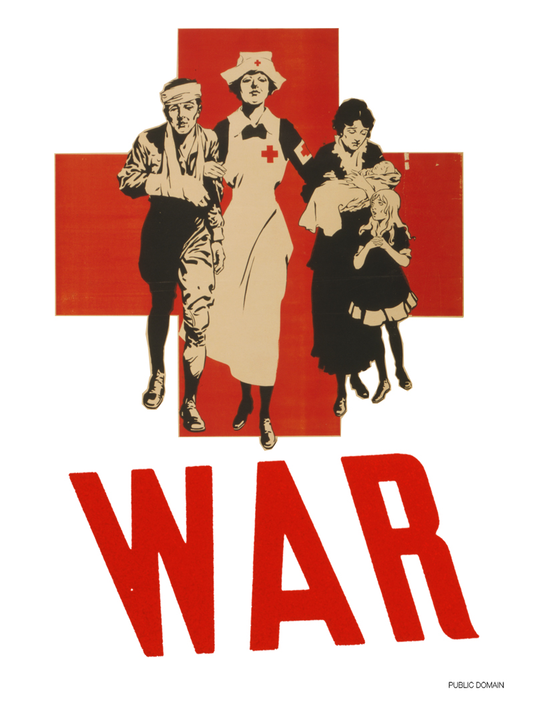
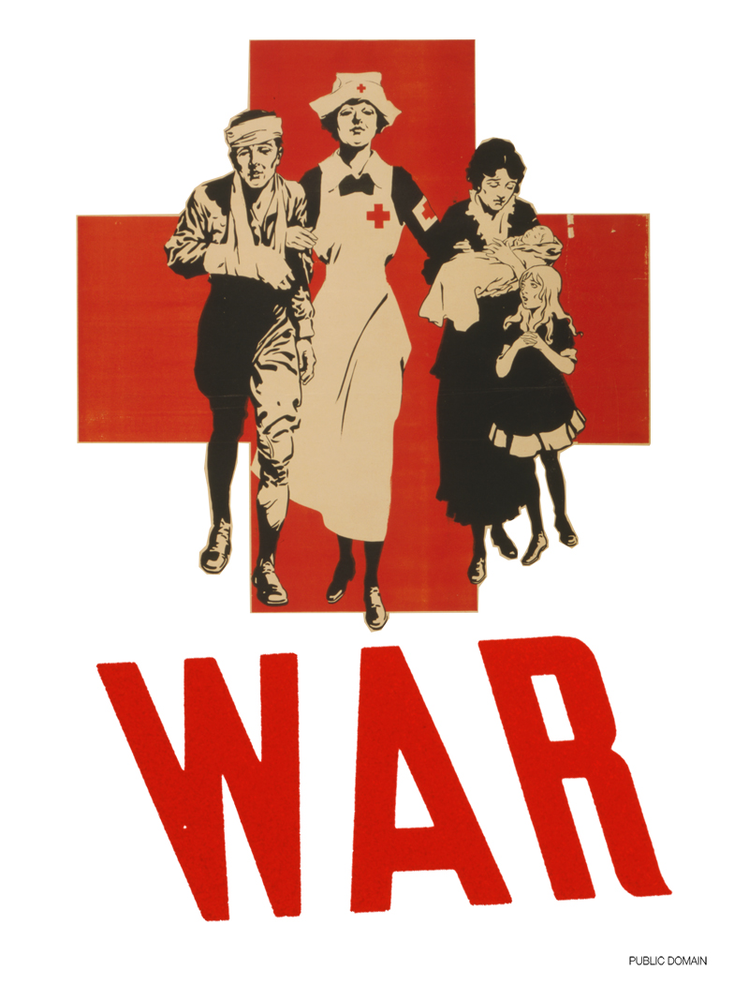

The participants chose from the following list of sources of Public Domain images: a sampling that represents different attitudes towards copyright and the public domain.
Archive.org represents a grassroots archiving movement that takes off . Its collection is a combination of materials acquired and digites by archive.org, contributed by volunteers, scraped from other online sources, or digitised in collaboration with cultural institutions. This type specimen was contributed by a volunteer Dr. David M. MacMillan.
A spectacular online repository, with high quality reproductions. Sadly also an example of a museum that makes false claims about the legal status of the Public domain works in their collection.
Images of Works of Art that are in the Public Domain. Images of works of art that the Museum believes to be in the public domain which are identified as Open Access for Scholarly Content (OASC) Icon on the Site may be downloaded for limited non-commercial, educational, and personal use only, or for fair use as defined in the United States copyright laws. In addition, authorized non-commercial uses for such images shall include scholarly publications in any media. Users must, however, cite the author and source of such images, and the citations should include the URL "www.metmuseum.org," but not in any way that implies endorsement of the user or the user’s use of the images.
The Library of Congress is very clear on the fact that they are not rights holder to the works in their collection. Their Pictures and Prints collections are an amazing resource. (See All Collections)
This collection is in the Public Domain because of its age.
In addition to works that are in the Public Domain because of their age, the LOC has a number of collections that are in the Public Domain because they were made by employees of the US government. Among the most famous of these pictures are those made for the Farm Security Administration. These pictures include Migrant Mother, by Dorothea Lange.
Posters produced by various branches of the WPA (Work Projects Administration) to publicize exhibits, community activities, theatrical productions, and health and educational programs in seventeen states and the District of Columbia.
These too are in the Public Domain because they were created by Federal employees. This makes for a refreshing change, because they date from 1936 - 1943, and most posters from this time are not in the Public Domain.
The Carol M. Highsmith Archive represents an artist donating her work to the public domain. Through an unprecedented collaboration with the Library of Congress they are made available. There are many people like Highsmith who, although mostly on a smaller scale, decide to short-circuit copyright and make their work available for use directly.
The NYPL has recently embraced the potential of digitally distributing their public domain collection. They have gone a step further, by trying to actively promoting the re-use of these materials. Don’t hesitate to apply for the Remix Residency! Some of their first ‘public domain remixes’ is ‘Navigating the Green Book’. The Green Book was a travel guide published between 1936 and 1966 that listed hotels, restaurants, bars, gas stations, etc. where black travelers would be welcome. Using data extracted from the books themselves, the app makes it possible to visualize a trip one may have taken using these books.